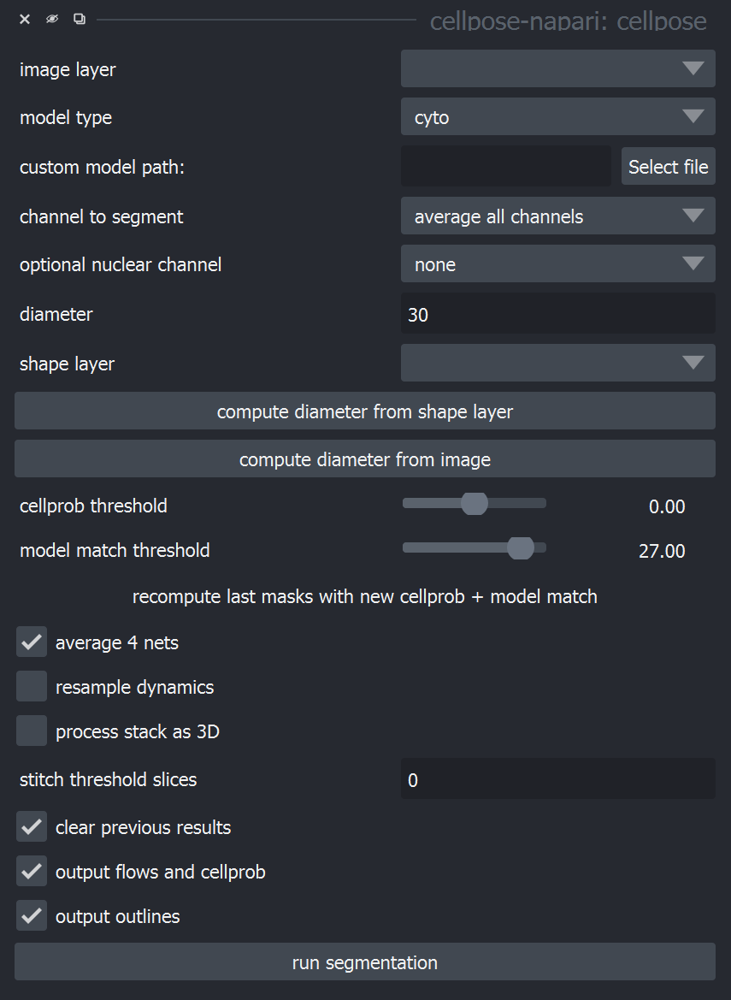

Understanding and adjusting parameters#
Opening the Cellpose-napari plugin#

After you’ve launched the napari viewer, you may open the Cellpose-napari plugin by clicking on the Plugins menu at the top of the screen. The plugin should open the panel shown below on the right side of the screen.

Cellpose parameters#
As a reference, here is a description of the Cellpose parameters to assist you in using and optimizing Cellpose for your data.
Image layer
Define the layer or image that will be segmented using cellpose.
Model type for pretrained model
the cyto model (Cytoplasm), to segment cells stained for their cytoplasm
the nuclei model (Nuclei) to segment cell nuclei
the cyto2 model (Cytoplasm 2.0), which is the cyto model augmented with user-submitted images
the Custom model, which lets you specify a custom model you have trained or downloaded. Select this under: custom model path > select file
Channel to segment
Indicate the channel that will be segmented. If the channel contains cytoplasmic structures, it should be associated with the cyto and cyto2 pretrained models, or nuclei with the nuclei model.
Segmentation of RGB images
‘0’ means that cellpose will run on a grayscale combination of all channels.
‘1’ stands for the first channel, corresponding to the red channel in an RGB image.
‘2’ and ‘3’ correspond to the green and blue channels in an RGB image.
Segmentation of multi-channel image
Ignore the ‘red’, ‘green’, blue’ labels and rely on channel order (found under the image, near the slider).
OR
Isolate the channel of interest: right click on the layer and select Split Stack
Select it on the Image layer option, channel to segment: 0
Optional nuclear channel
The cytoplasm model in cellpose is trained on two-channel images, where the first channel is the channel to segment and the second channel is an optional nuclear channel. Here are the options for each:
channel 1. 0=grayscale, 1=red, 2=green, 3=blue, 4 …
channel 2. 0=None (will set to zero), 1=red, 2=green, 3=blue, 4.
The nuclear model in cellpose is trained on two-channel images, where the first channel is the channel to segment, and the second channel is always set to an array of zeros. Therefore, set the first channel as 0=grayscale, 1=red, 2=green, 3=blue; and set the second channel to 0=None
Diameter (in pixels)
The cellpose models have been trained on images which were rescaled to all have the same diameter (30 pixels in the case of the cyto model and 17 pixels in the case of the nuclei model). Therefore, cellpose needs a user-defined cell diameter (in pixels) as input, or to estimate the object size of an image-by-image basis. If 0 cellpose will estimate for each image, default is 30.
Click compute diameter from image to start diameter estimation. However, if this estimate is incorrect, please set the diameter by hand.
OR
You can also get an estimate from clicking on the image, creating a napari ‘Shapes’ layer and drawing circles or squares around your cells. If you click compute diameter from shape layer, the plugin will set the diameter to the average diameter of the drawn shapes.
Changing the diameter will change the results that the algorithm outputs. When the diameter is set smaller than the true size, cellpose may over-split cells. If the diameter is set too big then cellpose may over-merge cells.
Cell probability threshold (number of masks)
This is the threshold to determine masks. Decrease this threshold if cellpose is not returning as many masks as expected. Increase this threshold if cellpose is returning too many masks, particularly from dim areas.
Model match threshold (Mask quality threshold)
To check that the recovered shapes after the flow dynamics step are consistent with real masks, we recompute the flow gradients for these putative predicted masks, and compute the mean squared error between them and the flows predicted by the network.
The model match threshold parameter is the inverse of the maximum allowed error of the flows for each mask. Decrease this threshold if cellpose is not returning as many masks as you’d expect. Increase this threshold if cellpose is returning too many ill-shaped masks.
Average 4 nets
This is the option to control network performance vs time. If unchecked, only 1 network will be used to process the channel allowing a faster, yet less accurate, segmentation. If checked, an average of 4 networks will be used, and the segmentation will be slower but more accurate.
Resample dynamics
If not checked, the processing will be done on a diameter = 30 pixels. If checked, the processing will be done based on the original image. Masks will be smoother.
Process stack as 3D
Cellpose can segment 3D and 4D stacks. If there is a channel axis, specify it by labelling it with ‘c’.
To run 3D processing, check “process stack as 3D”.
If the 3D segmentation is not working well and there is inhomogeneity in Z, try stitching masks using the “stitch threshold slices option instead of checking process stack as 3D. In this setting, cellpose will create masks in 2D on each XY slice and then stitch them across slices if the intersection over union (IoU) between the mask on the current slice and the next slice is greater than or equal to the stitch threshold slices.
Clear previous results
If checked, this removes all previous data.
Output flows and cellprob
Show a layer containing the gradient vector field (combination of the predicted horizontal and vertical gradients, as well as whether a pixel belongs to any cell).
Output outlines
Show a layer containing cell boundaries.